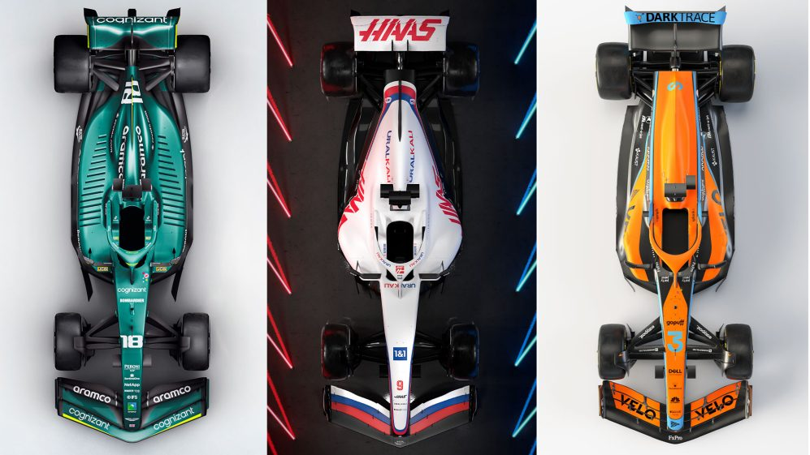

Baseball
Top Story
Massive variation and ingenious solutions What we learned from the first week of 2022 launches 
After the rapid-fire launches of three cars, we have the first indication of how teams have responded to the all-new aero regulations and in a word it is ‘differently’. Putting aside the fake Red Bull, the designs of the Haas VF-22, Aston Martin AMR22
and McLaren MCL36 are widely different far more so than was the case between cars at the end of the previous set of regulations last year. The most obvious visual differences are in how each of the teams have re-arranged their
cooling packages and this has had a profound effect on the shape of their bodywork, particularly with regards to the sidepods and engine covers.
What is clear between the three of them is that there is now less scope to have the dramatic undercut and downward-sloping sidepods, which had become the norm in the last two or three seasons. What is clear between the three
of them is that there is now less scope to have the dramatic undercut and downward-sloping sidepods, which had become the norm in the last two or three seasons.
There are three main reasons for this:
- The new floor venturi tunnels which account for around 50% of the car’s total downforce take up space at the front of the sidepods, which was previous reserved for cooling apparatus.
- The wheelbases of the cars are now regulated and must be between 3460-3600mm. The upper limit is shorter than even the shortest 2021 car. So there is less length in which to fit the radiators and their cooling channels.
- There is probably less performance authority in the airflow around the sidepods than was the case under the previous regulations.
Related News